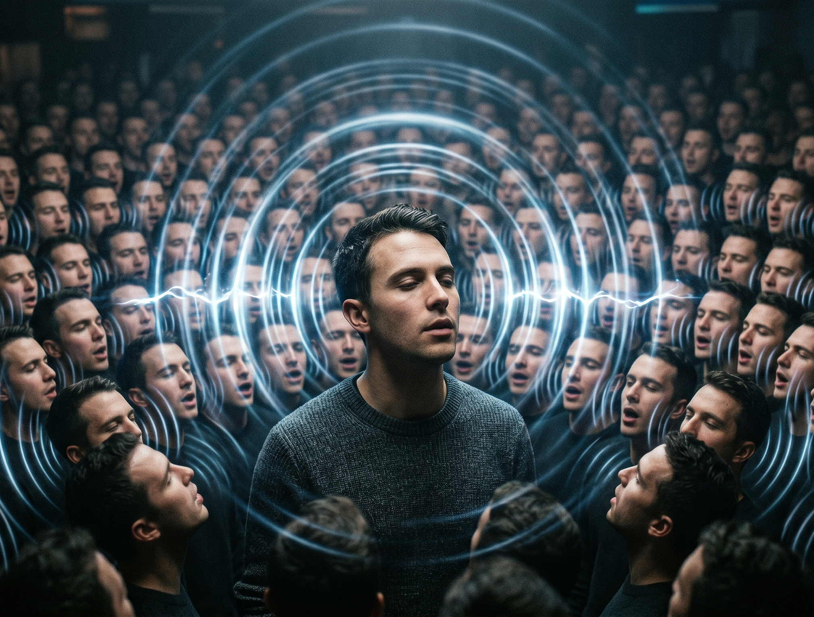

Algoritmanın Aynası
13. Hafta: Sosyal Medya ve Algoritmik Etik
Bir Saat Olmuştu…
Mert "uyumadan 5 dakika bakacağım" diyerek TikTok'u açtı. İlk video bir spor klibiydi. Sonra "kimseye faydası olmayan sistem" üzerine öfkeli bir yorum geldi. Ardından "gerçek erkek nasıl olunur?" başlıklı bir video. Sonra bir tane daha, bir tane daha… Saatine baktığında 01:14 olmuştu. Ekran süresi: 1 saat 27 dakika. İzlediği videolardan tek birini bile hatırlamıyordu.
Algoritma onu uyutmak için değil, ekranda tutmak için tasarlanmıştı.
images/doomscroll_phone.png
karanlıkta telefona kapılmış genç
Sayılarla Dikkat Savaşı
DataReportal "Digital 2024", Common Sense Media, MIT Sloan & Vosoughi (2018)
Günlük Sosyal Medya Süresi
Türkiye ortalaması (2024)
Yalan Haber Hızı
Doğru habere göre (MIT 2018)
Ergen Kızlarda Olumsuz Beden Algısı
Instagram — Meta iç araştırma raporu
"Bir hizmet karşılığında para ödemiyorsanız, satılan ürün sizsiniz." — internet aforizması
İlgi Ekonomisi
Sosyal medya ücretsizdir çünkü para ödeyen müşteri siz değilsiniz — siz, satılan üründünüz.
Zaman = Para
Ekrana baktığın her saniye reklam verene satılır.
Time on app = revenue
Etkileşim Her Şeydir
Yorum, beğeni, paylaşım — algoritmanın yakıtı budur.
Tepki = Yayılım
Doğru Değil, Hızlı
Algoritma "doğru mu?" diye sormaz; "tıklatıyor mu?" diye sorar.
Truth ≠ Virality
Filtre Balonu vs. Yankı Odası
Filtre Balonu
Algoritma seçer. Sen farkına bile varmadan, geçmiş tıklamalarına göre dünya senin için kişiselleştirilir.
"Aynı arama, iki kişiye iki farklı sonuç gösterir." — Eli Pariser, 2011
Yankı Odası
Sen seçersin. Aynı fikri paylaştığın insanlarla çevrelenir, muhalif görüşleri görmezden gelirsin. Onaylanma duygusu pekişir.
Bir görüş "tek duyduğun" olduğu için doğru gibi gelir; oysa duymadıkların yanlış olduğunu gösterebilir.
Sonuç: Kutuplaşma. Karşı görüş yalnızca "yanlış" değil, "kötü niyetli insan" olarak algılanmaya başlar.
Rage-Bait: Öfke Tuzağı
Araştırma açık: Öfke uyandıran içerikler 6 kat hızlı yayılıyor. Algoritma "tıklatanı" öne çıkarır; doğruluk onun ölçütlerinden biri bile değildir.
😡 Öfke
Yorum yapma dürtüsü patlar — etkileşim eğrisi fırlar.
😱 Korku
"Hemen paylaş, herkes görsün!" güdüsü — viral sıçrama.
😢 Üzüntü
Beğeni ve dayanışma yorumları yağar — uzun süreli duygusal etkileşim.
😌 Sakin Bilgi
Az tepki = az yayılım. Eğitici içerik cezalandırılır.

images/echo_chamber.png
tek ses, sonsuz yankı
Vaka: Cambridge Analytica (2018)
"This Is Your Digital Life" adlı akademik bir anket uygulaması, izinsiz biçimde 87 milyon Facebook kullanıcısının verisini topladı. Cambridge Analytica bu veriyi kullanarak psikolojik profiller çıkardı ve mikro hedefli reklamlarla siyasi kampanyalara hizmet etti:
🇺🇸 ABD 2016 Seçimleri
Trump kampanyasında "kararsız seçmen" gruplarına yönelik kişiselleştirilmiş ikna mesajları.
🇬🇧 Brexit Referandumu
"Leave" kampanyasına yönelik mikro hedefli reklamların etkisi tartışıldı.
⚖️ Sonuç
Facebook 5 milyar dolar ceza ödedi; Cambridge Analytica iflas etti — ama demokrasi tartışması bitmedi.
images/cambridge_data.png
veri ipliklerinin oy sandığına akışı
Frances Haugen: Whistleblower
images/haugen_files.png
dökülen "CONFIDENTIAL" belgeler
2021 yılında eski Facebook ürün yöneticisi Frances Haugen, on binlerce iç belgeyi kamuoyuyla paylaştı. Belgeler tek bir gerçeği gözler önüne seriyordu: Facebook, kullanıcıya zarar verdiğini biliyordu — ama büyüme uğruna sessiz kalmayı tercih etmişti.
Instagram, ergen kızların %32'sinde beden algısını olumsuz yönde etkiliyordu.
2018'deki algoritma değişikliği, öfke ve kutuplaşmayı içeren içerikleri 5 kat daha fazla öne çıkardı.
Etiyopya iç savaşı sırasında etnik nefreti yayan paylaşımlar yeterince denetlenmedi.
Bir iç belge özetliyordu: "Kâr ile kullanıcı güvenliği arasında, kâr tercih edildi."
Deepfake: Görmek Artık İnanmak Değil
Yapay zeka artık gerçek bir kişinin yüzünü ve sesini taklit edip ona hiç söylemediği cümleleri söylettirebiliyor.
🎤 Ses Klonlama
Yalnızca 3 saniyelik bir ses örneğiyle %85 inandırıcılığa ulaşan modeller (ElevenLabs vb.).
🎬 Yüz Değiştirme
Tom Cruise, ünlüler ve Türk siyasetçilerinin sahte videoları milyonlarca kez izlendi.
💸 Yeni Nesil Dolandırıcılık
"Anne, başım dertte, hemen para gönder!" — kendi çocuğunun klonlanmış sesiyle gelen telefon.
images/deepfake_split.png
yarı gerçek / yarı AI yüz
Türkiye'de Dezenformasyon Yasası
"Halkı yanıltıcı bilgiyi alenen yayma" suçu — 2022 yılında eklenen madde.
İç ve dış güvenliği ya da kamu sağlığını ilgilendiren gerçeğe aykırı bir bilgiyi, halk arasında endişe, korku veya panik yaratacak biçimde alenen yayan kişiye verilebilecek ceza:
1 – 3 yıl hapis
✓ Amaç
Seçim, deprem, salgın gibi kriz dönemlerinde bilgi kirliliğinin önüne geçmek.
⚠ Eleştiri
"Yanıltıcı" kavramının geniş yorumlanması; basın özgürlüğü açısından RSF ve AB'nin kaygılarına yol açtı.
📡 Uygulamada
Maddenin uygulanması için kasıt aranır: yalnızca paylaşmak değil, "yanıltma niyetiyle" paylaşmak suç oluşturur.
🌍 Uluslararası Bağlam
AB Dijital Hizmetler Yasası (DSA, 2023) platformların kendisine yapısal sorumluluk yüklüyor.
Senaryo: %40 Daha Fazla Süre
Bir sosyal medya devinde algoritma mühendisisin. Yeni bir A/B testi şunu gösteriyor: kullanıcıya tartıştığı / hoşlanmadığı hesapların içerikleri daha çok gösterildiğinde, uygulamada kalma süresi %40 artıyor. Reklam geliri tavan yapacak. Ürün müdürün "yarın canlıya alalım" diyor.
Yayına Al
"Benim işim hedefleri tutturmak. Ne göreceğine kullanıcı karar verir."
İtiraz Et
"Bu, kutuplaşmayı kâra çevirmek demek. Konuyu etik kurula taşırım."
🔵 Faydacı Bakış
Şirket kazancı kısa vadede pozitif; ama milyarlarca kullanıcı ve toplumsal doku zarar görür. Toplam fayda büyük ölçüde negatiftir.
🟣 Kant / Deontolojik
Kullanıcının öfkesini metaya çevirmek, insanı yalnızca araç olarak kullanmaktır — kategorik buyruğun açık ihlali.
🟢 Erdem Etiği
Erdemli mühendis yalnızca "yapılabilir mi?" sorusunu değil, "yapılmalı mı?" sorusunu da sorar — Haugen'in tutumu gibi.
AB AI Yasası: "Manipülatif tasarım" yüksek riskli kategoride yer alır — bu tür uygulamalar şirkete yapısal yaptırım getirir.
Algoritmaya Karşı Zihin Kiti
Bildirimleri kapat — dopamin döngüsünü kır.
Ekran süresi sınırı koy — iOS Screen Time / Android Digital Wellbeing ile.
Sana kötü hissettiren hesapları sustur veya takipten çık.
Paylaşmadan önce doğrulama yap: teyit.org, doğrulukpayi.com, Snopes.
Karşıt görüşten en az bir hesap takip et — balonu bilinçli olarak kır.
Yatak odasında telefon yok — uyku ve ruh sağlığın için.
Öfke uyandıran bir gönderiye hemen cevap verme; 5 dakika bekle.
Eğitici ve sanatsal içerikleri "Daha fazla göster" seçeneğiyle besle.
Haftada bir gün dijital detoks — beyne ve dikkate nefes aldır.
Haftaya Bakış
Sıradaki Konu: Büyük Veri ve Dijital Aktivizm
BU HAFTA NE ÖĞRENDİK?
İlgi Ekonomisi
Ürün sensin
Filtre Balonu
Pariser, Kutuplaşma
Cambridge / Haugen
Demokrasi & Çocuk
Deepfake
TCK 217/A
"Algoritma sana duymak istediğini verir, ama duymaya ihtiyacın olanı göstermez." — Eli Pariser